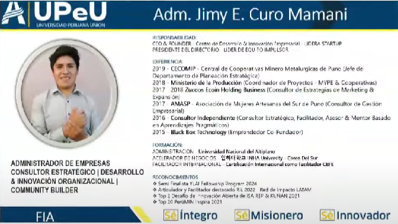

Corporación Lidera StartUp
Desde 2018, Corporación Lidera StartUp se dedica a fomentar el emprendimiento en regiones descentralizadas del Perú. Somos una incubadora de negocios que proporciona soporte a emprendedores locales, ayudándoles a escalar sus ideas y convertirlas en empresas exitosas. Ofrecemos programas de formación para líderes y asesores estratégicos, capacitándolos para generar cambios reales en sus comunidades.
Hemos impactado a más de 2850 emprendedores, pre-incubado y asesorado 18 emprendimientos innovadores. Nuestros programas incluyen bootcamps, hackathons, y cursos tanto presenciales como virtuales. Participamos en eventos internacionales como el CLIIQ NEXUS LATAM, donde compartimos nuestras experiencias y aprendizajes con una red global de innovadores.